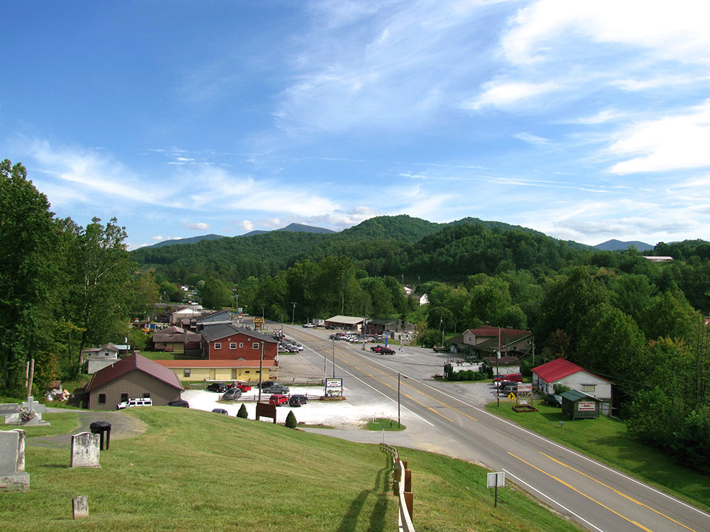
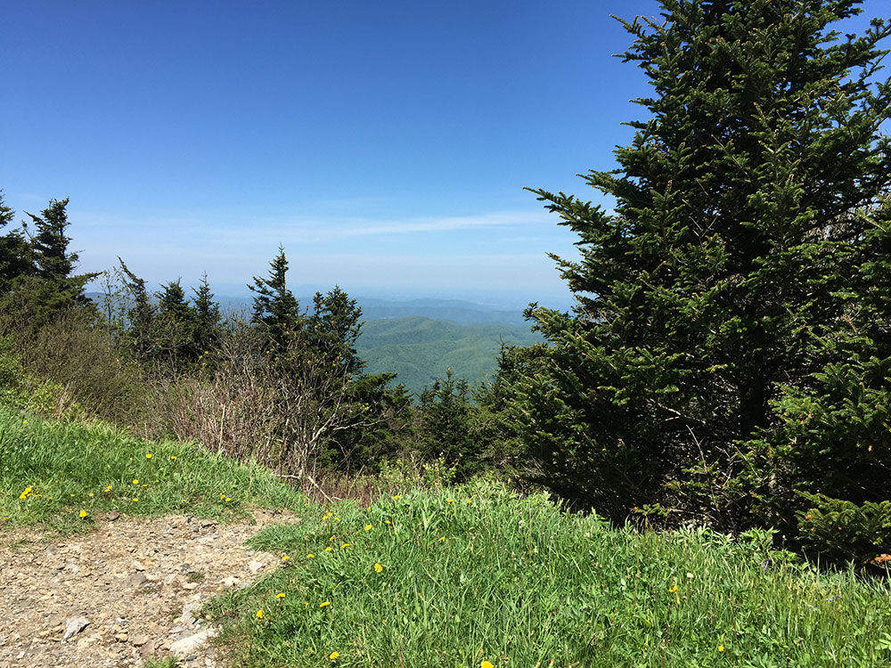
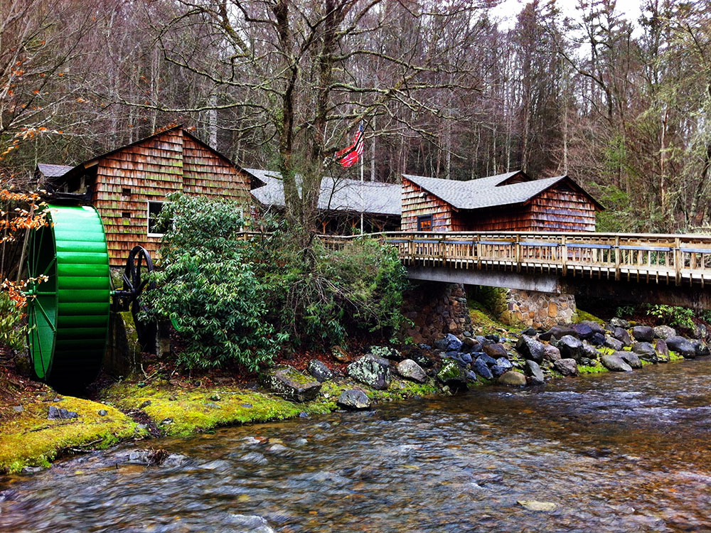
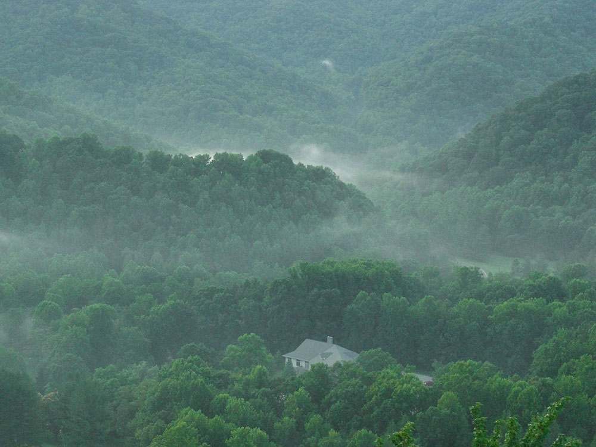

Park situated in the Blue Ridge of the Appalachian Mountains, preserving 2,006 acres (8.12 km2) of mostly hardwood forest
General Information
Off Season: 8:00am to 4:00pm daily
Cabin and camping guests may remain overnight
No admission fee required
Summer: Best weather for hiking and mountain views
Fall: Vibrant Appalachian foliage and cool temperatures
Winter: Quiet trails and scenic mountain landscapes
How to Get There
From Elizabethton (18 mi): Take US-19E south to TN-143, turn onto TN-143 toward Roan Mountain, and continue approximately 12 miles to the entrance of Roan Mountain State Park.
Overview
Roan Mountain State Park is a Tennessee state park in Northeast Tennessee, close to the Tennessee-North Carolina border and near the community of Roan Mountain. Situated in the Blue Ridge of the Appalachian Mountains, the park preserves 2,006 acres (8.12 km2) of mostly hardwood forest along the Doe River, in the shadow of 6,285-foot (1,916 m) Roan Mountain and the Appalachian Trail, which are owned and managed by the US Forest Service. The state park was established in the 1950s to protect part of the mountain's forests and watershed and to give the public a place for camping and outdoor recreation near the Roan Highlands, which are famous for the world's largest natural rhododendron garden and the longest stretch of grassy bald in the Appalachians. Visitors come to hike, camp, fish, swim and mountain bike, to tour the historic Miller Farmstead, and to enjoy the Roan Mountain Rhododendron Festival in summer. Cross-country skiing is possible in snowy winters.
Access
The park is on TN-143 in the village of Roan Mountain, in Carter County in the northeastern corner of Tennessee, about 18 miles from Elizabethton and roughly 30 miles from Johnson City. Almost all visitors arrive by car; from Elizabethton, take US-19E south to TN-143. TN-143 continues past the park, becoming NC-261 and climbing to Carver's Gap on the state line, where the Appalachian Trail crosses and a small parking area serves the Roan Highlands balds. The road is steep and winding, and the paved road to the Cloudland Trailhead and Rhododendron Gardens is closed in winter. There is no public transportation to the park.
Seasons
Spring brings wildflowers and fresh green forest, with the famous Catawba rhododendron blooms on the highlands usually peaking in mid to late June, when the festival draws crowds. Summer is the best weather for hiking, with cooler mountain temperatures than the valleys, though afternoon thunderstorms are common. Fall brings vivid Appalachian foliage, usually at its best in October, and comfortable temperatures. Winters are cold, and snow and ice can occur at higher elevations, which can close roads on the mountain and make some trails hazardous, though the park itself is quiet and scenic.
Things to Do
Nestled in the Appalachian Mountains of northeast Tennessee, Roan Mountain State Park encompasses more than 2,000 acres of forests, mountain streams, and scenic valleys beneath the famous Roan Highlands. The park is known for its rhododendron blooms, waterfalls, historic sites, and access to some of the most spectacular mountain scenery in the eastern United States.
Hike Through Appalachian Cove Forests
The park contains extensive hardwood forests, mountain streams, and lush coves that showcase the biodiversity of the southern Appalachian Mountains. Trails range from easy riverside walks to more challenging mountain routes.
Visit Miller Farmstead
This preserved late-1800s Appalachian homestead offers a glimpse into mountain life during the settlement era. Historic buildings and interpretive exhibits help visitors understand the region's cultural heritage.
Explore the Doe River
The Doe River flows through the center of the park, creating scenic views, peaceful walking opportunities, and numerous spots to enjoy the sounds and beauty of a mountain river.
See Seasonal Rhododendron Blooms
Roan Mountain is famous for its spectacular rhododendron gardens. Late spring and early summer bring vibrant displays of blooming rhododendrons that attract visitors from across the country.
Enjoy Mountain Views
Numerous areas within and around the park provide views of the Roan Highlands, one of the most scenic mountain ranges in the southern Appalachians.
Observe Wildlife
The park supports black bears, deer, wild turkey, salamanders, and many other native species that thrive within the protected mountain ecosystem.
Discover Wildflowers
Spring and summer bring an abundance of native wildflowers to the park's forests and trails, making it a favorite destination for nature enthusiasts.
Walk the Covered Bridge Area
One of the park's most recognizable landmarks is its covered bridge spanning the Doe River. The area provides a picturesque setting and easy access to nearby trails.
Top Trails
Peg Leg Mine Trail
Length: 0.7 miles round trip
Elevation Gain: Approximately 150 feet
Difficulty: Easy
A short family-friendly hike leading to the remains of an old iron mine. Along the way, hikers pass through scenic forest and learn about the area's mining history.
Tom Gray Trail
Length: 3.0 miles round trip
Elevation Gain: Approximately 700 feet
Difficulty: Moderate
This trail follows portions of the Doe River before climbing through hardwood forest to higher elevations. It offers beautiful woodland scenery and seasonal wildflowers.
Raven Rock Trail
Length: 2.0 miles round trip
Elevation Gain: Approximately 450 feet
Difficulty: Moderate
A rewarding hike leading to overlooks with mountain views. The trail passes through rich Appalachian forest and showcases the park's diverse ecosystem.
Cloudland Trail
Length: 1.5 miles round trip
Elevation Gain: Approximately 250 feet
Difficulty: Easy to Moderate
One of the park's most popular trails, Cloudland Trail follows the Doe River through lush forest and passes several scenic river views and historic features.
Chestnut Ridge Trail
Length: 1.8 miles round trip
Elevation Gain: Approximately 350 feet
Difficulty: Moderate
This trail climbs gently through forested terrain and provides opportunities to experience the quiet beauty of the Appalachian foothills.
Appalachian Trail Access
Length: Variable
Elevation Gain: Varies by route
Difficulty: Moderate to Strenuous
Located a short drive from the park, access points to the Appalachian Trail lead to the famous Roan Highlands balds and offer some of the most breathtaking mountain views in the eastern United States.
Visitor Centers
The park has a visitor center near the entrance with exhibits on the area's natural and cultural history, as well as information on trails, programs and the Miller Farmstead. Park staff can provide maps and advice on the Doe River and the mountain trails and on current road conditions to Carver's Gap and the Rhododendron Gardens. The Miller Farmstead, with its historic house and outbuildings, is a short walk from the visitor area. Hours vary by season, so check with Tennessee State Parks before you visit.
Camping and Lodging
The park has a campground along the Doe River with tent and RV sites and a group of cabins, which are popular and best reserved well ahead, especially in summer and during the rhododendron bloom. Check Tennessee State Parks for current campsite and cabin details. Hotels, motels and restaurants are available in Elizabethton, about 18 miles away, and in the larger city of Johnson City, about 30 miles away. Over the state line in North Carolina, Bakersville, Spruce Pine, Banner Elk and Boone offer inns, cabins and hotels within an hour or so, and Pisgah National Forest has additional campgrounds.
Miller Farmstead is a historic farmstead located in the park. It was listed on the National Register of Historic Places on July 25, 2014. The farm was settled in 1870 and the house was built in either 1908 or 1910. The farmstead includes the home, a barn, a chicken coop, and several other contributing structures. The Miller Family Cemetery is also located on the farm.
Roan Mountain is a 6,285 ft (1,916 m) mountain straddling the North Carolina/Tennessee border in the Unaka Range of the Southern Appalachian Mountains in the Southeastern United States. The range's highpoint, Roan is clad in a dense stand of Southern Appalachian spruce-fir forest, and includes the world's largest natural rhododendron garden, and the longest stretch of grassy bald in the Appalachian range. The Cherokee National Forest and Pisgah National Forest converge atop the mountain, with Roan Mountain State Park located near its northern base. The Appalachian Trail traverses most of the Roan's crest. The Roan High Knob Shelter is the highest back-country shelter on the entire 2,174-mile (3,499 km) trail.
Roan Mountain comprises the greater part of the Roan Highlands, a 20-mile (32 km) massif stretching from Big Rock Creek on the west to U.S. Route 19 on the east. Most of this massif lies along the Tennessee-North Carolina border, between Carter County and Mitchell County. Yellow Mountain and Little Hump Mountain, on the northern tip of the massif, are part of the Roan Highlands but are generally not considered part of Roan Mountain proper.
Roan Mountain encompasses five summits, which are divided into two sections by Carver's Gap. The first section — composed of Roan High Bluff and Roan High Knob — lies west of Carver's Gap and is characterized by a thick coniferous forest. This part of Roan is shaped something like the body of a double-humped camel, with the "humps" being High Bluff and High Knob. Tollhouse Gap lies between the two peaks, and contains the Rhododendron Gardens, the largest of its kind in the world.
The second section of Roan Mountain — known as Grassy Ridge — is east of Carver's Gap, and is the longest stretch (approx. 7 mi or 11 km) of grassy bald in the Appalachian Mountains. A grassy bald is a type of highland meadow characterized by thick grass and sparse tree coverage. The three peaks atop Grassy Ridge are Round Bald, Jane Bald, and Grassy Ridge Bald. The bald area spans the summits of all three, covering an area roughly equal to 1,000 acres (4.0 km2).
The Appalachian Trail, after traversing Iron Mountain to the west, crosses Hughes Gap and ascends Roan's northern slope to Tollhouse Gap. From there, it makes a sharp turn to the east, crossing Roan High Knob, Carver's Gap, Grassy Ridge, and Yellow and Little Hump Mountains before descending to US-19 and the White Rocks Mountain area. From the slopes of Old Black in the Great Smoky Mountains, some 150 miles (240 km) to the south, to Mount Washington in the White Mountains of New Hampshire, some 1,500 miles (2,400 km) to the north, Roan Mountain is the only area where the trail rises above the 6,000-foot (1,800 m) mark.
Roan High Knob, located between Carver's Gap and Tollhouse, is the highest point on Roan Mountain with an elevation of 6,285 feet (1,916 m). The Tennessee-North Carolina border crosses its summit. High Knob is the highest point in Tennessee outside of the Great Smoky Mountains. and the 15th-highest peak in the eastern United States. The Appalachian Trail crosses High Knob's western slope, with a well-marked spur trail leading to the summit. The Roan High Knob Shelter is a few feet from the summit.
The distance to the horizon (ignoring the effect of atmospheric refraction and natural obstructions) from Roan High Knob is approximately 164 miles.
Roan High Bluff, on the mountain's western end. It has an elevation of 6,267 feet (1,910 m), and is entirely within the state of North Carolina. Unlike its sister peak, High Bluff is steep, rising sharply toward the summit with a rapid 1,000-foot (300 m) drop on its northwest side. While High Bluff's actual summit is closed to the public, an observation platform sits some 20 feet (6.1 m) below it, and offers a 180-degree view of the valley to the northwest. The platform can be accessed via the Cloudland Trail, which rises out of Tollhouse Gap.
Round Bald rises near the center of the Roan massif. It has an elevation of about 5,823 feet (1,775 m) and overlooks Carver's Gap at the far western end of Grassy Ridge. The Appalachian Trail (following the state border) crosses its summit, first passing through a sparse treeline on the mountain's northwestern slope before emerging in the bald area near the top. There is a panoramic view from the summit.
Jane Bald is a small knob between Round Bald and Grassy Ridge Bald. It has an elevation of about 5,810 feet (1,771 m). A local legend relates its name to a woman named "Jane" who died of milk sickness while crossing the mountain. The bald area atop Jane is much less substantial than its two massive neighbors, and is partially overgrown by rhododendron. The Appalachian Trail (following the state border) crosses its summit.
Grassy Ridge Bald dominates the center of Grassy Ridge. It has an elevation of about 6,184 feet (1,885 m), making it one of the highest grassy balds in the Appalachian Mountains (Black Balsam Knob, located southwest of Asheville, is slightly higher at 6,214 ft.) The bald area atop the mountain covers several 100 acres (40 hectares), with patches of trees and shrubbery in some places. The Appalachian Trail (following the state border) crosses the mountain's northern slope, with several spurs (usually marked) traversing the top of the mountain. The summit is adorned by a rock pile and a bronze plaque placed to honor the memory of a local highland farmer named Cornelius Rex Peake. There is a panoramic view from the summit, with Grandfather Mountain standing prominently to the east and the Black Mountains visible to the south. The summit of Grassy Ridge Bald is almost entirely within North Carolina.
Yellow Mountain (5,371 ft or 1,637 m) and Little Hump Mountain (5,446 ft or 1,660 m) comprise the northeastern fringe of the Roan Highlands. Both are traversed by the Appalachian Trail.
Among the rocks that make up Roan Mountain, the oldest are a type of metamorphic rock known as Cranberry gneiss. Formed over a billion years ago from ancient ocean sediments, they are among the oldest in the United States. Roan gneiss, another type of metamorphic rock found on the mountain, was formed roughly 800 million years ago. Also in abundance is Beech granite, a type of igneous rock believed to be 700 million years old. The mountains themselves were formed between 200 million and 400 million years ago during the Appalachian orogeny, when the North American and African plates collided, thrusting the rock upward.
State Routes TN 143/NC 261 — which connect the village of Roan Mountain in Tennessee with Bakersville, North Carolina — ascend the northeast slope of Roan Mountain, crossing its crest at Carver's Gap. The Appalachian Trail can be accessed from Carver's Gap (it runs perpendicular to the highway), where there is a small parking lot. To the east (across the street from the parking lot), the trail ascends Round Bald and proceeds across Grassy Ridge. To the west, the trail swings around Roan High Knob just over one mile (1.6 km) to Tollhouse Gap, where it turns north.
A paved road crosses the south side of Roan High Knob, connecting Carver's Gap with Tollhouse Gap, although this road is closed in Winter. This road leads to the Cloudland Trailhead, which crosses the Rhododendron Gardens and ascends the western slope of Roan High Bluff to the observation platform just below the summit. The trail is just over a mile long.
The Roan High Knob Shelter, near the summit of Roan High Knob, can accommodate 15 backpackers. The shelter is maintained by the Tennessee Eastman Hiking and Canoeing Club. However, Overmountain Shelter (found approximately 5.5 miles from Carver's Gap towards 19-E) has been indefinitely closed since September 4, 2019. The U.S. Forest Service has deemed this famous red barn structurally unsound.
This article uses material from the Wikipedia article "Roan Mountain State Park", and "Roan Mountain (Roan Highlands)", which is released under the Creative Commons Attribution-Share-Alike License 3.0.






